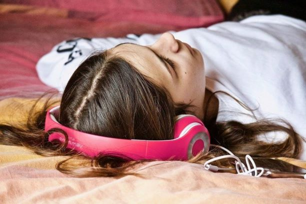

Qui n’a jamais eu des souvenirs qui se bousculent dans sa tête à l’écoute d’une vieille chanson ? Les chercheurs australiens Bill Thompson et Amee Baird expliquent, dans un article publié sur The Conversation, que « la musique agit comme un super-stimulus. Elle active de larges zones du cerveau, y compris celles qui contrôlent le mouvement, l’émotion et la mémoire. » Les scientifiques affirment même que pour faire ressurgir des souvenirs personnels, la musique était plus puissante que les photos ! Plus largement, il semblerait que suivre des cours de musique soit bénéfique pour notre mémoire. En témoigne cette étude réalisée en 2003 par des chercheurs de Hong Kong : ils ont démontré que les jeunes ayant suivi une formation musicale retiennent mieux des mots appris dans une liste que les autres personnes. D’après eux, « plus la formation musicale est longue pendant l’enfance, meilleure est la mémoire verbale ».
La musique nous incite à nous dépasser. Vous avez l’habitude de faire votre footing, écouteurs greffés aux oreilles ? C’est une bonne chose. La musique nous aide à améliorer nos performances sportives. Les scientifiques ont fait pédaler des personnes âgées de 9 à 80 ans sur des vélos d’appartement pendant deux minutes, avec pour consigne de parcourir la plus grande distance. Un premier groupe roulait en silence, un second sur de la musique douce et le dernier sur de la techno. Les premiers ont parcouru en moyenne 1,2 km, contre 1,57 km pour le groupe qui était une mélodie douce et 1,62 km pour celui de la techno. Ce test, valable également pour la course à pied, prouve que nous avons donc tendance à pédaler plus vite quand la musique est plus rapide.
source:unsplash.comLa musique est reconnue pour ses vertus thérapeutiques. La musicothérapie est d’ailleurs de plus en plus utilisée dans le milieu médical. Les exemples ne manquent pas. La musique réduirait l’anxiété des patients atteints de cancer. Chez les seniors, elle permettrait de lutter contre le déclin du cerveau, elle est notamment utilisée comme complément thérapeutique chez les malades atteints de Parkinson. Même chose pour ceux touchés par Alzheimer : « Les chansons familières peuvent déclencher l’activité des régions frontales du cerveau, qui sont précisément les régions épargnées par les troubles liés à la maladie d’Alzheimer », expliquent les chercheurs Bill Thompson et Amee Baird. D’après l’Inserm (Institut national de la santé et de la recherche médicale), la musique pourrait même aider les enfants à venir à bout de leur dyslexie. Après une cure de musique, « 60 % des enfants du groupe « musique » s’étaient améliorés en lecture au point de sortir des critères diagnostic de dyslexie ». La musicothérapie a de beaux jours devant elle.
Écouter de la musique pourrait booster notre créativité, selon une étude publiée en 2012 dans la revue Journal of Consumer Research. Attention, cela ne fonctionne que si la musique n’est pas trop forte : dans ce cas, elle nous permet de penser de manière plus abstraite. Au contraire, un volume trop élevé peut bloquer la pensée créative, en donnant au cerveau trop d’informations à traiter. Une autre étude, menée par Simone Ritter, de l’Université Radboud (Pays-Bas), et Sam Ferguson, de l’Université de Sydney, prône quant à elle l’écoute de musique joyeuse pour booster notre créativité.
 source:unsplash.com
source:unsplash.com
Écouter de la musique permet de se détendre. Boule au ventre, appréhension… Pour se détendre, rien de mieux que d’écouter un peu de musique ! En effet, elle agit sur notre organisme et augmente la production d’hormones qui favorisent le bonheur, tout en éliminant les hormones liées au stress. Pour que cela soit efficace, il faut évidemment écouter une musique que l’on aime. Il existe même une chanson qui serait capable de faire baisser de 65 % le stress, d’après une étude menée par Mindlab International : il s’agit de Weightless de Marconi Union. En réalité, cette chanson, créée avec des musicothérapeutes, a pour seul but de déstresser celui qui l’écoute. Et c’est plutôt efficace.
source:unsplash.com